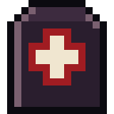

Guides / 04

Health and survival
Wounds step by step, infection, hunger, thirst, cold, sleep and death.
Your survivor's body works like a body. Every zombie blow can become a wound on a part of the body, and every wound has its own treatment. It is all in Character → Health.
Wounds
- Scratch: bleeds a little, closes in 1 day.
- Laceration: bleeds more, 3 days. Sometimes it becomes a hemorrhage, which bleeds very fast.
- Bite: bleeds and almost always gets infected.
- Deep cut: needs sutures.
- Shard: from glass while rummaging; remove it with tweezers.
- Fracture: needs a splint, 7 days.
- Burn: ointment and a wrap.
Treating step by step
- Tourniquet (hemorrhage): stop the blood with a tourniquet or cloth. Don't leave it more than 2 hours without suturing.
- Clean and disinfect: saline, alcohol or cachaça.
- Remove the shard with tweezers, when there is one.
- Suture with a suture kit (deep cuts and hemorrhages).
- Bandage: dressing, gauze, bandage or cloth.
The wound only heals with every step done. Dressings get dirty after 12 hours (24 with medical tape) and need changing; cloth already counts as dirty. A dirty wound gets infected, and an ordinary infection is cured with antibiotics.
The zombie infection
Hunger and thirst
Your character uses up food and water like a person, and more when walking. The warnings come in three levels ("Hungry", "Starving", "Sick with hunger"). Only at the last level does the character lose health, and only during a session: with the app closed, no one starves to death.
Cooked food goes further and lasts longer. To cook, light a campfire or the wood stove (lighter and plank). Rainwater can make you sick: boil it first.
Cold and heat
The temperature is your city's, right now. In the rain without a raincoat, and at night, it is colder; below 16 °C you need warm clothes. In the heat, heavy clothing tires you and a cap helps. Cold burns food; heat burns water.
Fatigue and sleep
Walking, running and fighting tire you. Ending the session with Sleep at the base, at an outpost or in a tent recovers fatigue and health while you are away. With a bed at the base, the rest is much better; away from it, a sleeping bag helps.
The mind too
Panic in a fight takes away accuracy; shoving relieves it. Staying still at the base for too long makes the character bored, and going through a lot of bad things makes them sad. Going out for a walk helps.
Clothes
Clothes protect the part of the body they cover. Torn clothes protect half as much: sew them with a needle, thread and a cloth.
When they die
The character and their skills are gone. Everything they carried stays in a pile where they fell: for 24 hours only you can see it, then anyone can, and a zombie with their face stands guard. The wallet loses 15% of its stamps. The base, the chests, the radio vault and the clothes in the wardrobe stay. Tap New survivor and get back on the street.
Guias / 04
Saúde e sobrevivência
Feridas passo a passo, infecção, fome, sede, frio, sono e a morte.
O corpo do seu sobrevivente funciona como um corpo. Cada golpe de zumbi pode virar uma ferida numa parte do corpo, e cada ferida tem o seu tratamento. Tudo fica em Personagem → Saúde.
Feridas
- Arranhão: sangra pouco, fecha em 1 dia.
- Laceração: sangra mais, 3 dias. Às vezes vira hemorragia, que sangra muito rápido.
- Mordida: sangra e quase sempre infecta.
- Corte profundo: precisa de sutura.
- Estilhaço: do vidro ao vasculhar; tire com pinça.
- Fratura: precisa de tala, 7 dias.
- Queimadura: pomada e faixa.
Tratar passo a passo
- Torniquete (hemorragia): pare o sangue com torniquete ou pano. Não deixe mais de 2 horas sem suturar.
- Limpar e desinfetar: soro, álcool ou cachaça.
- Tirar o estilhaço com pinça, quando houver.
- Suturar com kit de sutura (cortes profundos e hemorragias).
- Enfaixar: atadura, gaze, bandagem ou pano.
A ferida só cicatriza com todos os passos feitos. Curativos sujam depois de 12 horas (24 com esparadrapo) e precisam ser trocados; pano já conta como sujo. Ferida suja infecciona, e infecção comum se cura com antibiótico.
A infecção zumbi
Fome e sede
O personagem gasta comida e água como uma pessoa, e mais quando anda. Os avisos aparecem em três níveis ("Com fome", "Faminto", "Passando mal de fome"). Só no último nível ele perde vida, e só durante a sessão: com o app fechado ninguém morre de fome.
Comida cozida rende mais e dura mais. Para cozinhar, acenda uma fogueira ou o fogão a lenha (isqueiro e tábua). Água de chuva pode dar enjoo: ferva antes.
Frio e calor
A temperatura é a da sua cidade agora. Na chuva sem capa e à noite faz mais frio; abaixo de 16 °C você precisa de roupa quente. No calor, roupa pesada cansa e o boné ajuda. Frio gasta comida; calor gasta água.
Cansaço e sono
Andar, correr e lutar cansam. Encerrar a sessão com Dormir na base, num posto ou numa barraca recupera o cansaço e a vida enquanto você está fora. Com cama na base o descanso é bem melhor; fora dela, saco de dormir ajuda.
A cabeça também
Pânico na luta tira a precisão; empurrar alivia. Ficar muito tempo parado na base deixa o personagem entediado, e passar por muita coisa ruim o deixa triste. Sair para andar ajuda.
Roupas
Roupas protegem a parte do corpo que cobrem. Roupa rasgada protege pela metade: costure com agulha, linha e um pano.
Quando ele morre
O personagem e as habilidades se vão. Tudo o que ele carregava fica numa pilha onde caiu: por 24 horas só você vê, depois qualquer um, e um zumbi com o rosto dele vigia. A carteira perde 15% dos selos. A base, os baús, o depósito do rádio e as roupas do armário ficam. Toque em Novo sobrevivente e volte para a rua.
Guías / 04
Salud y supervivencia
Heridas paso a paso, infección, hambre, sed, frío, sueño y la muerte.
El cuerpo de tu sobreviviente funciona como un cuerpo. Cada golpe de zombi puede volverse una herida en una parte del cuerpo, y cada herida tiene su tratamiento. Todo está en Personaje → Salud.
Heridas
- Arañazo: sangra poco, cierra en 1 día.
- Laceración: sangra más, 3 días. A veces se vuelve hemorragia, que sangra muy rápido.
- Mordida: sangra y casi siempre se infecta.
- Corte profundo: necesita sutura.
- Esquirla: del vidrio al registrar; sácala con pinzas.
- Fractura: necesita férula, 7 días.
- Quemadura: pomada y venda.
Tratar paso a paso
- Torniquete (hemorragia): detén la sangre con torniquete o trapo. No lo dejes más de 2 horas sin suturar.
- Limpiar y desinfectar: suero, alcohol o cachaza.
- Sacar la esquirla con pinzas, cuando la haya.
- Suturar con kit de sutura (cortes profundos y hemorragias).
- Vendar: venda, gasa, vendaje o trapo.
La herida solo cicatriza con todos los pasos hechos. Las curaciones se ensucian después de 12 horas (24 con esparadrapo) y hay que cambiarlas; el trapo ya cuenta como sucio. Una herida sucia se infecta, y la infección común se cura con antibiótico.
La infección zombi
Hambre y sed
El personaje gasta comida y agua como una persona, y más cuando camina. Los avisos aparecen en tres niveles ("Con hambre", "Hambriento", "Enfermo de hambre"). Solo en el último nivel pierde vida, y solo durante la sesión: con la app cerrada nadie muere de hambre.
La comida cocida rinde más y dura más. Para cocinar, enciende una fogata o la cocina de leña (encendedor y tabla). El agua de lluvia puede dar náuseas: hiérvela antes.
Frío y calor
La temperatura es la de tu ciudad ahora. Con lluvia sin impermeable y de noche hace más frío; por debajo de 16 °C necesitas ropa abrigada. Con calor, la ropa pesada cansa y la gorra ayuda. El frío gasta comida; el calor gasta agua.
Cansancio y sueño
Caminar, correr y pelear cansan. Terminar la sesión con Dormir en la base, en un puesto o en una tienda de campaña recupera el cansancio y la vida mientras estás fuera. Con cama en la base el descanso es mucho mejor; fuera de ella, el saco de dormir ayuda.
La cabeza también
El pánico en la pelea quita precisión; empujar lo alivia. Quedarse mucho tiempo quieto en la base aburre al personaje, y pasar por muchas cosas malas lo entristece. Salir a caminar ayuda.
Ropa
La ropa protege la parte del cuerpo que cubre. La ropa rasgada protege a medias: cósela con aguja, hilo y un trapo.
Cuando muere
El personaje y sus habilidades se van. Todo lo que llevaba queda en una pila donde cayó: durante 24 horas solo tú la ves, después cualquiera, y un zombi con su rostro la vigila. La cartera pierde el 15% de los sellos. La base, los cofres, el depósito de la radio y la ropa del armario se quedan. Toca Nuevo sobreviviente y vuelve a la calle.